J. Lintumies · Juri Jukola · Tuomarniemen Toivo
Romaaneja rajaseudusta ja yksi tietokirja: uusi PIELISJÄRVI-sarja pitäjän omista asiakirjoista, kolmen osan sarja Suomen itärajasta, erillisteos sähkökatkosta — ja tietokirja kuolemanrangaistuksesta Itä-Suomessa, kokonaisuudessaan luettavissa.
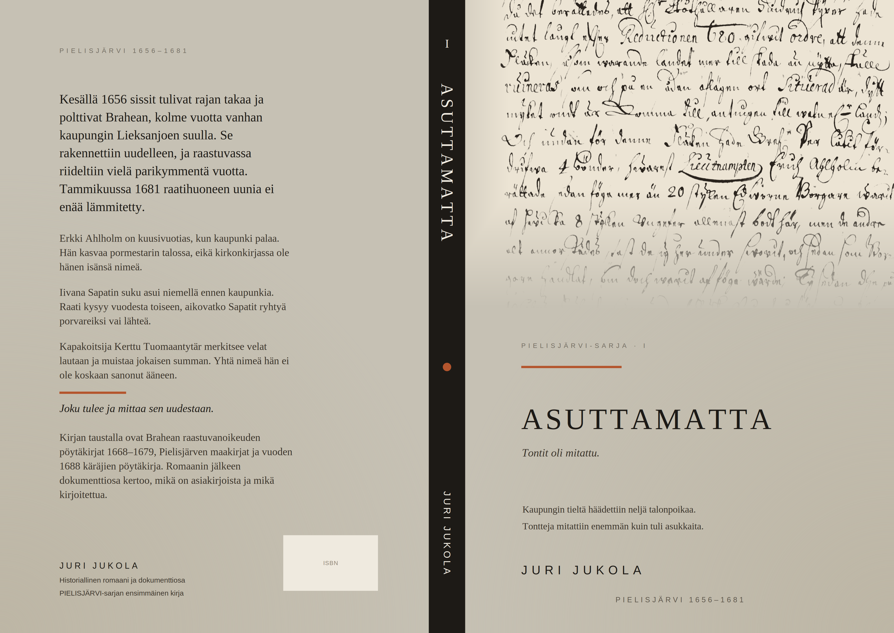
Kreivi Pietari Brahe perusti Lieksanjoen suulle kaupungin, ja sen tieltä häädettiin neljä talonpoikaa. Kesällä 1656 sissit polttivat kolme vuotta vanhan kaupungin. Se rakennettiin uudelleen, mutta tammikuussa 1681 raatihuoneen uunia ei enää lämmitetty.
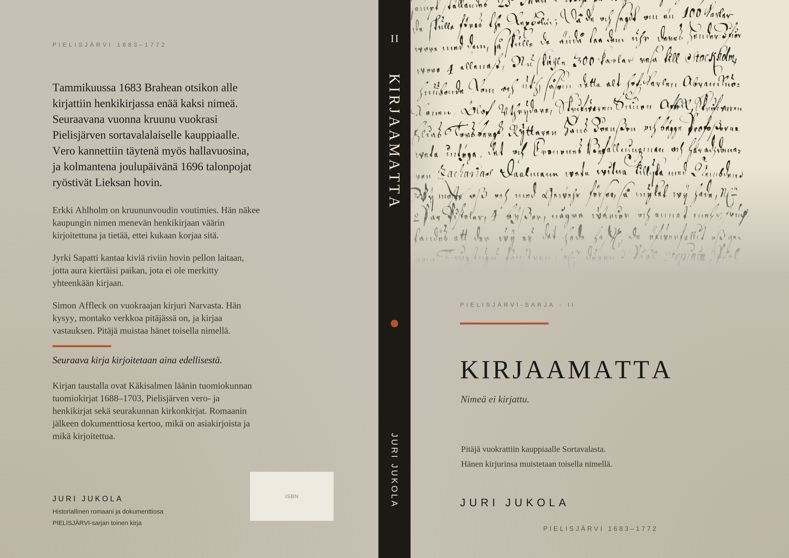
Vuonna 1684 kruunu vuokrasi Pielisjärven sortavalalaiselle kauppiaalle. Hänen kirjurinsa Narvasta kysyi, montako verkkoa pitäjässä on, ja kirjasi vastauksen. Pitäjä muistaa hänet toisella nimellä.
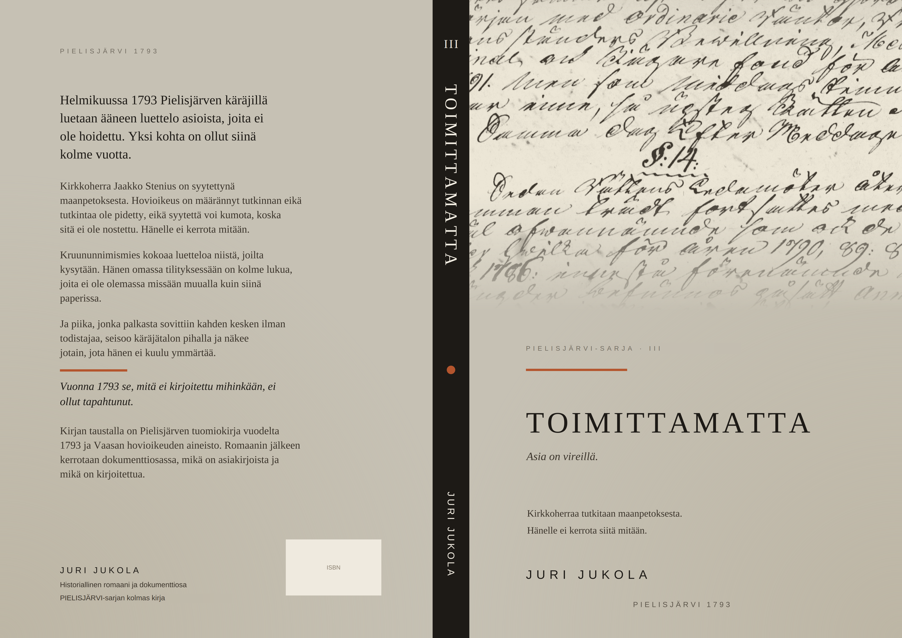
Kirkkoherra Jaakko Stenius nuorempi on syytettynä maanpetoksesta. Vaasan hovioikeus määräsi tutkinnan vuonna 1790, mutta sitä ei ole pidetty, eikä kirkkoherralle kerrota asiasta mitään.
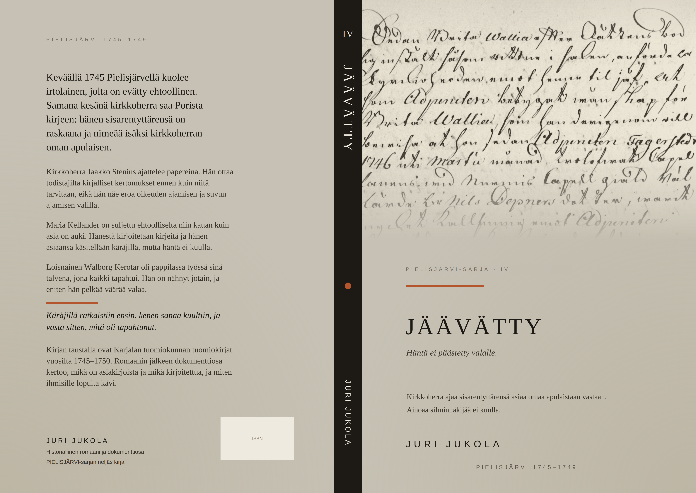
Kirkkoherra Jaakko Stenius vanhempi ajaa käräjillä sisarentyttärensä asiaa omaa apulaispappiaan vastaan. Kaksi vuotta kestävässä jutussa ratkaistaan ensin, kenen sanaa kuullaan, ja vasta sitten, mitä tapahtui.
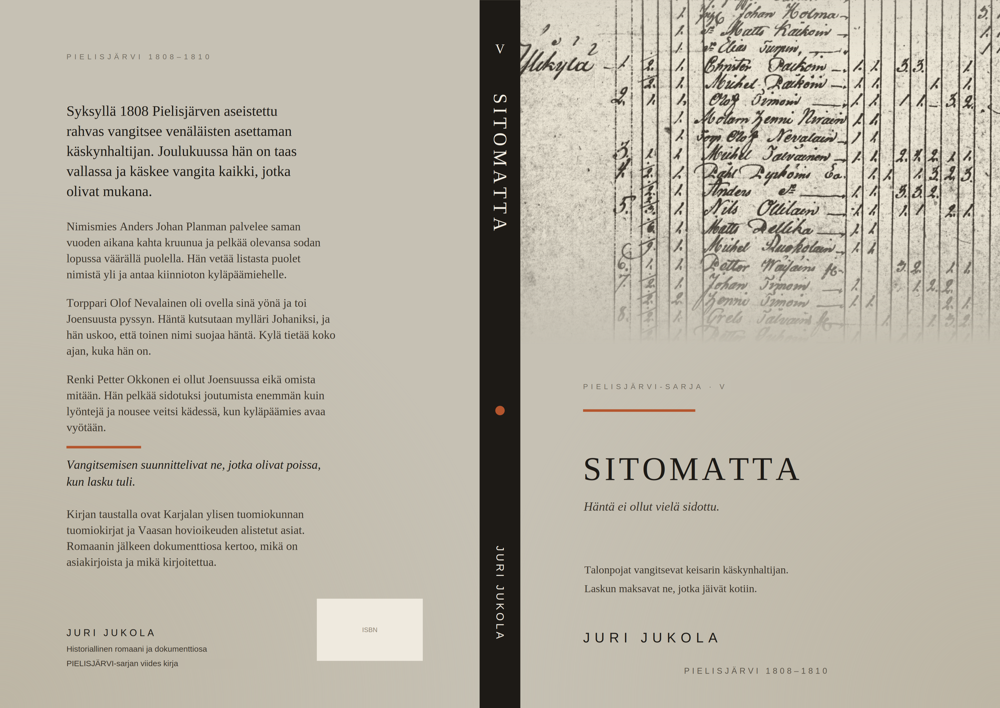
Pielisjärven aseistettu rahvas vangitsee syksyllä 1808 venäläisten asettaman käskynhaltijan. Joulukuussa hän on taas vallassa ja käskee vangita kaikki, jotka olivat mukana — ja johtaja on jo Ruotsin puolella.
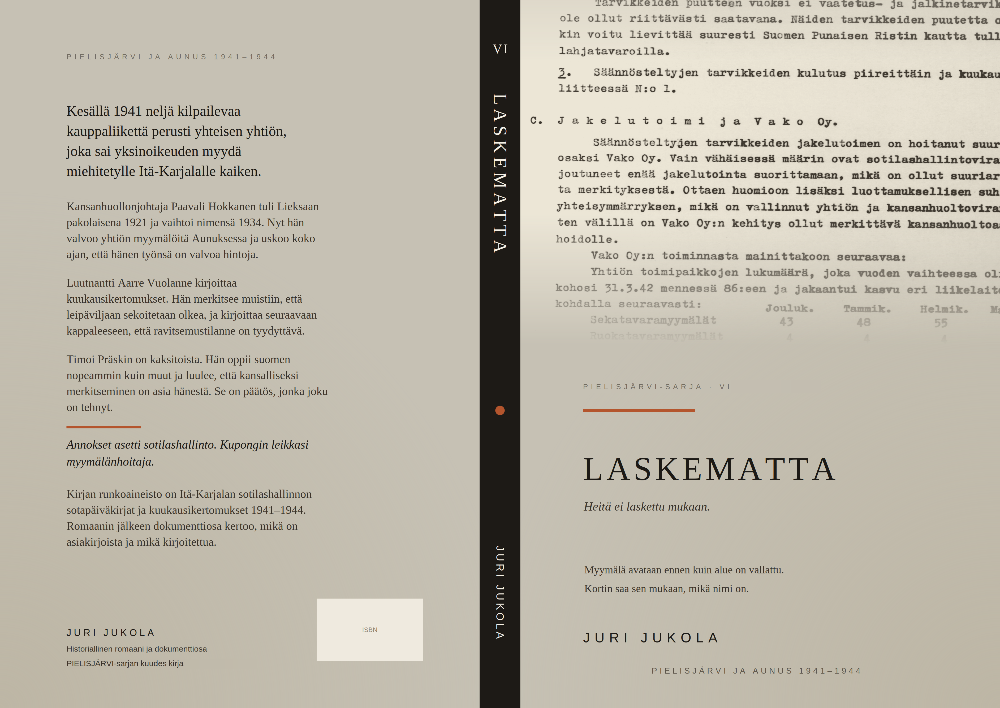
Lokakuussa 1941 kansanhuollonjohtaja Pauli Jukola määrätään Aunukseen. Hän tuli Suomeen 14-vuotiaana vuonna 1919, vanhemmat jäivät rajan taakse, eikä heistä ole tietoa. Nyt hänen käytössään on alueen väestökortisto.
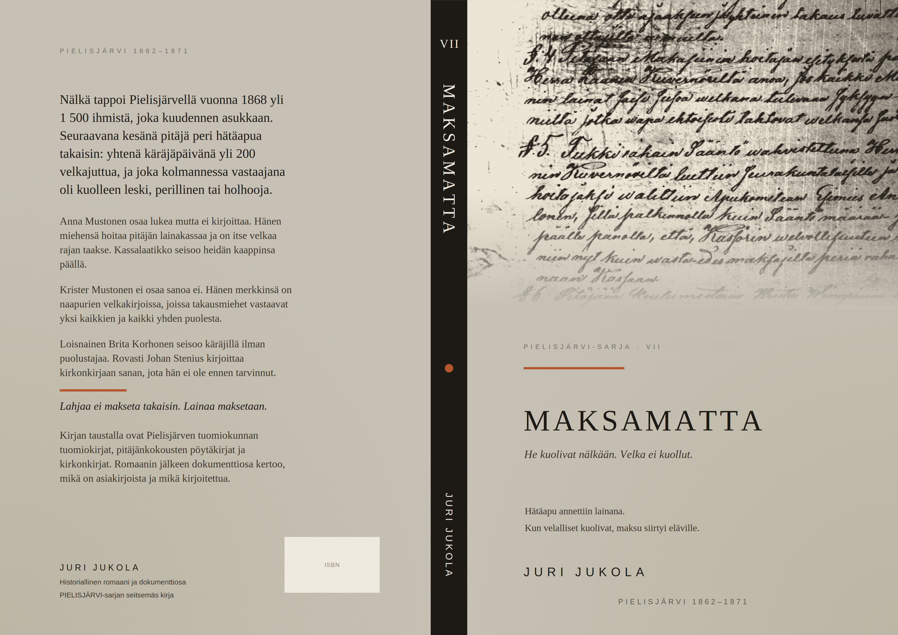
Keväällä 1868 Pielisjärvellä kuoli joka kuudes asukas. Hätäapu oli annettu lainana, ja kun velalliset kuolivat, velka ei kuollut heidän mukanaan. Seuraavana kesänä pitäjä kutsui koolle käräjät periäkseen sen takaisin.
Kansikuvat ovat kirjojen omista asiakirjoista. Asuttamattan kannessa on Pielisjärven käräjien pöytäkirja maaliskuulta 1688, jossa todetaan, että kaupungin tieltä kreivi Pietari oli häätänyt neljä talonpoikaa. Kirjaamattan kannessa on saman käräjäpöytäkirjan todistajaluettelo, jossa mainitaan Skrifwaren Simon Affleck (kirjuri Simon Affleck). Toimittamatta-kirjan kannessa on vuoden 1793 käräjien pykälä 14, Jäävätyn kannessa helmikuun 1747 kohta, jossa todistajaa vastaan esitetään jäävi, ja Sitomattan kannessa Kuopion läänin henkikirja vuodelta 1810: Ylikylän talo numero kaksi, ja siinä peräkkäin mylläri Henric Nevalainen ja torppari Olof Nevalainen. Laskemattan kansi ei ole käsialaa vaan konekirjoitusta: Itä-Karjalan sotilashallinnon kertomuksen sivu, jonka väliotsikkona on Jakelutoimi ja Vako Oy. Maksamattan kannessa on Pielisjärven pitäjänkokouksen pöytäkirja marraskuulta 1865, jossa tukkirahakassan hoitajaksi valitaan hätäapukomitean esimies ja hänen tehtäväkseen määrätään periä rahat aikanaan kassaan.
Toukokuussa 1769 mies tappoi Paltamossa viisi nukkuvaa ihmistä. Hänet mestattiin ja teilattiin. Kolme vuotta myöhemmin oikeudessa istuivat syytettyinä Kajaanin kirkkoherra, kappalainen ja kruununvouti.
Syyte oli, että mies oli mestattu ennen kuin hän oli valmis kuolemaan. Se ei ollut muotoseikka. Vuoden 1686 kirkkolaki velvoitti papiston saattamaan kuolemaan tuomitun katumukseen, ja jos tuomittu ei ollut valmis, teloitusta oli lykättävä ja siitä oli ilmoitettava maaherralle. Sama laki kielsi antamasta tuomitulle liikaa väkevää ennen teloitusta, koska juopunut ei kykene katumaan. Rangaistus vaati tuomitun tajuissaan.
Kirjan aineisto on Kansallisarkiston digitoituja tuomiokirjoja viidestätoista itäisestä pitäjästä: Ilomantsista, Liperistä, Kiteeltä, Tohmajärveltä, Pielisjärveltä, Kontiolahdelta, Sotkamosta, Paltamosta, Iisalmesta, Kuopiosta, Juvalta ja Kangasniemeltä. Yhdistetty korpus on 9 819 sivua, ja siitä on luettu alkuperäisinä kuvina 57 tapausta.
Se on rajaseutu. Uudenkaupungin rauhassa 1721 ortodoksisesta Karjalasta jäi Ruotsin puolelle vain kaksi seurakuntaa, Ilomantsi ja Liperi, ja juuri niitä kahta pitäjää varten oli olemassa kuninkaallisia säädöksiä, joita ei tarvittu missään muualla valtakunnassa. Kun Sotkamossa mestattiin rajan takaa tullut mies, hänelle oli määrä hakea kreikkalaisen opin pappi lähimmältä venäläiseltä paikkakunnalta, jotta hän ehtisi katua.
Tästä aineistosta saa helposti sen kuvan, että 1700-luvun oikeus oli mielivaltainen ja verinen. Se on totta. Samassa aineistossa perusteettomasta ilmiannosta sakotettiin, mieleltään vajaata ei rangaistu lainkaan, humalatila lievensi ja sovinto alensi sakkoa — ja kun näyttö jäi kahta valallista todistajaa vähemmäksi, syytetty vapautettiin. Sana vapautettu esiintyy aineistossa 1 400 sivulla, sana mestattava noin 200:lla.
Kysymys ei siis ole, miksi he olivat julmia. Kysymys on, mistä he olivat tarkkoja ja miksi juuri niistä asioista.
Määräys valmistaa tuomittu autuaaseen kuolemaan esiintyy tämän kirjan aineistossa 228 sivulla. Sana oberedd, valmistautumaton, esiintyy kahdella — ja ne kaksi ovat sama juttu. Kaava toimi kahdellasadalla sivulla ja petti kerran, ja se kerta vei kolme virkamiestä oikeuteen.
Prologissa kysytään, mitä meidän käytännössämme on sellaista, jota kahdensadan vuoden päästä katsotaan samalla tavalla kuin me katsomme teiliä maantien varressa. Vuoden 1734 lain alkuun oli painettu Olaus Petrin tuomarinohjeet, ja ne ovat Suomen lakikirjan alussa yhä. Ne luetaan kerran, siinä vaiheessa kun ihmisestä tulee tuomari. Sen jälkeen luetaan niitä muita sivuja.
Prologi, kahdeksantoista lukua ja epilogi. 90 sivua, luonnos kokonaisuudessaan luettavissa. Lyhyt näyte on 19 sivua: prologi ja kolme lukua. Kirja ottaa kantaa, eikä kustantamo julkaise tällaista — pamfletteja ei ole ennenkään julkaistu kustannustaloista. Joten sama julkaista se näin. Genre on tietokirja jota ei julkaista.
Kolme vuotta, kolme romaania, noin 200 000 sanaa. RAJAMAA-trilogia kertoo Venäjän hajoamisesta sellaisena kuin se näkyy Suomen itärajalta ja Suomenlahdelta: ei panssarikiiloina vaan hintoina, taajuuksina ja lomakkeina, jotka jonkun on osattava lukea.
Kukaan ei ole pahis. Jokainen askel on perusteltu. Lopputulos on siitä huolimatta katastrofi.
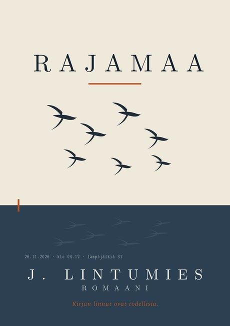
Marraskuun kahdentenakymmenentenäkuudentena päivänä 2026, kello 04.12, päivystäjä soittaa Onttolaan ja sanoo, että taajuudet ovat tyhjät.
Kapteeni on kuunnellut rajan takaista radioliikennettä yksitoista vuotta. Se on ollut ruma mutta säännöllinen, ja säännöllisyys on ollut rauhaa. Lämpökameran kuvassa kolmekymmentäyksi ihmistä kävelee länteen, aseet olalla piiput alaspäin, käsissä jotakin valkoista.
Merkit olivat tulleet siinä järjestyksessä jossa ne rajaseudulla aina tulevat: ensin polttoaine, sitten posti, sitten linnut, ja viimeisenä puhe. Suurvallan romahduksen ensimmäinen luotettava mittari ei ollut satelliittikuva. Se oli kyläkaupan mökkivuokrakysyntä.
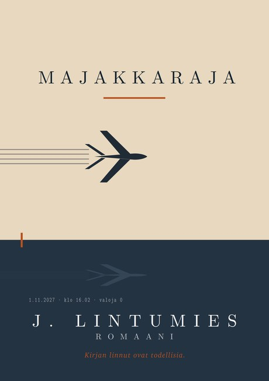
Marraskuun ensimmäisenä iltana 2027 Viinijärven yllä kulkee kone, jossa ei pala valoja.
Jokainen kone vilkuttaa. Se on laki, ja se on turvallisuutta. Tämä kulkee suoraan ja tasaisesti kuin jokin, joka tietää minne on menossa eikä halua että siinä häiritään.
Pihalla seisoo mies, joka on ollut viisi viikkoa eläkkeellä ja kirjannut vihkoon mitä taivaalla kulkee. Kaksikymmentä kilometriä pohjoisempana seitsemäntoistavuotias seuraa samoja koneita katolle viritetyllä antennilla ja huomaa, että ne katoavat kartalta aina samassa kohdassa. Ja lintutornissa istuu vanha ystävä, jolla on samanlainen vihko — liian siisti.
Kukaan ei pyydä heitä katsomaan. Kukaan ei usko heitä ajoissa.
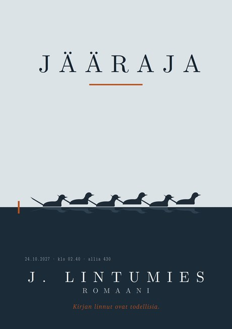
Tammikuussa 2029 Suomenlahdella ei tapahdu mitään sellaista, mistä kukaan olisi vastuussa.
Kalastajalle soitetaan lokakuussa. Merenpohjasta on nostettava mittalaitteita, työ on laillista, yhtiö on olemassa ja verot maksetaan, ja siitä maksetaan enemmän kuin meri antaa hyvänä kuukautena. Hän kysyy kaksi kysymystä ja jättää kolmannen kysymättä. Se on se kohta, jonka hän muistaa myöhemmin parhaiten — ei sitä hetkeä jolloin hän sanoi kyllä, vaan sitä jolloin hän ei sanonut ei.
Jokainen lupa on myönnetty lain mukaan, jokainen korvaus maksettu ajallaan, jokainen lomake täytetty oikein. Se seurasi siitä, että jokainen teki oman osansa oikein eikä kenenkään osaan kuulunut katsoa sitä kokonaan.
Kirjojen taustaksi on tehty yli kaksikymmentä katsausta, jotka on kirjoitettu erikseen ja jotka kestävät lukemisen ilman romaaneja: sähköjärjestelmän riittävyys, sähkön hinta talvella, Venäjän hajoamisen rakenne, liittolaisten valvontalennot, merenpohja strategisena tilana, työkoiran hajuaisti, viranomaisvaltuuksien käyttö ja kirjojen lintuhavainnot.
Jokaisessa on alussa Lukijalle-osa tavallisella suomella ja sen jälkeen laskelmat, lähteet ja epävarmuudet. Kirjan linnut ovat todellisia; niin ovat luvutkin.
Kirjan linnut ovat todellisia: oikea laji, oikea paikka, oikea vuodenaika. Sama koskee jäätä, säätä ja virkakieltä. Tarina on fiktiota — maailma jossa se tapahtuu ei ole.
Linnut ovat myös se yksi asia, joka kulkee jokaisen kirjan läpi. Ne on tarkistettu lajilleen, paikalleen ja päivälleen — ja se tarkistus on kirjoitettu auki omaksi katsauksekseen.
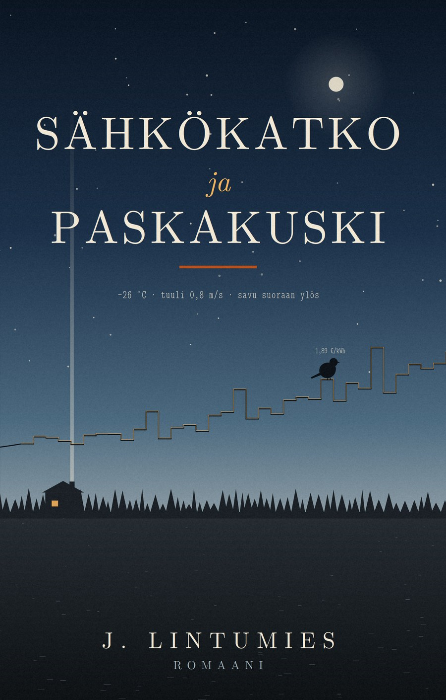
Marraskuun lopussa on seitsemäntoista astetta pakkasta eikä pihassa ole lunta.
Jouni Tiainen tyhjentää sakokaivoja. Firmassa on yksi auto ja yksi mies, ja auton kyljessä lukee hänen nimensä kolmenkymmenen sentin kirjaimin. Se tarkoittaa, että jos hän jättää tulematta, siinä lukee kenen autoa pihassa odotettiin.
Joulukuussa vesiosuuskunnan syyskokouksessa on kuusi ihmistä. Kohta kahdeksan koskee varautumista sähkökatkoihin: yksitoista pumppaamoa, satakolmekymmentäkaksituhatta euroa, ei tukimuotoa. Keskustelu kestää seitsemän minuuttia. Pöytäkirjaan kirjataan asia siirrettiin, mikä on täsmällinen ilmaus ja tarkoittaa sitä mitä se sanoo.
Helmikuussa tulee kahdeksan vuorokautta. Seuraavana tammikuuna kuusitoista.
Kukaan ei kuole. Kukaan ei tee mitään väärin. Ja se raha, jota ei löytynyt joulukuussa kuuden ihmisen kokouksesta, löytyy helmikuussa kolmessa viikossa.
Kirjan luvut ovat todellisia. Tehopulan mekanismi ja sen vaikutus veteen, viemäriin ja lämmitykseen on käyty läpi julkisista lähteistä erillisessä katsauksessa Teho, ei energia (Juri Jukola, 8/2026).
Etsin koelukijoita ennen julkaisua — sekä trilogiaan että erillisteokseen. Et tarvitse kirjallisuuskoulutusta — tarvitset vain aikaa lukea ja rohkeutta sanoa suoraan, missä kohtaa pitkästyit ja missä et malttanut lopettaa.
Nappi avaa sähköpostin · jlintumies@gmail.com
J. Lintumies on kirjailijanimi. Sen takana on diplomi-insinööri ja kauppatieteiden maisteri, joka on johtanut tehtaita ja toimitusketjuja kahdenkymmenenviiden vuoden ajan — Suomessa, Saksassa, Kiinassa, Meksikossa, Kanadassa, Yhdysvalloissa ja laajasti Aasiassa ja Etelä-Amerikassa. Nostureita, kaivosteknologiaa, ruiskuvalua ja lopuksi lääkinnällisiä laitteita, joissa virhe ei ole tilastorivi vaan potilas. Muutostilanteita, integraatioita, yksi yhtiö irrotettuna toisesta yhdessätoista kuukaudessa. Työ opetti sen, mistä nämä kirjat kertovat: vahinko syntyy harvoin pahuudesta ja melkein aina siitä, että jokainen tekee oman osansa oikein eikä kenenkään osaan kuulu katsoa kokonaisuutta.
Työnjako on käytännöllinen. Romaanit kirjoittaa Lintumies, paitsi PIELISJÄRVI-sarjan, jonka jokaisessa kirjassa on dokumenttiosa. Tietokirjat, taulukot, laskelmat ja katsaukset menevät omalla nimellä, koska niissä pitää voida soittaa tekijälle ja kysyä mistä luku on peräisin. Romaanissa saa vastata, että se on totta vaikkei tapahtunut.
Asepalveluksensa kirjailija suoritti rajavartiolaitoksessa sissikoira Naken kanssa, Immolassa ja Onttolassa. Koirat jäivät. Pihassa on nyt kaksi irlanninsetteriä, joista toinen tuli mukaan toisenlaista tietä ja on opettanut isännälleen kärsivällisyydestä enemmän kuin metsästyskoirat yhteensä. Kirjojen koirat eivät ole symboleja. Ne tekevät työtä, jonka tekemistä on katsottu läheltä.
Kirjoittaja asuu Tuomarniemessä Viinijärven rannalla, katsoo lintuja, kalastaa ja luotaa järvenpohjaa kaikuluotaimella mieluummin kuin arvailee mitä siellä on. Sama pätee muuhunkin: yhteiskunnallisiin kysymyksiin, huoltovarmuuteen ja siihen mitä rajan takana tapahtuu, hän suhtautuu kuten tuotantolukuihin — ensin data, sitten mielipide. Yleensä siinä järjestyksessä.
Kahdestakymmenestäviidestä vuodesta johtajana jäi myös se, ettei jelhistelystä eikä pönötyksestä ole koskaan seurannut mitään hyvää. Kirjoissa ei siksi ole puheita eikä oivalluksia ääneen sanottuina. Lukija saa juohautuksen: rivin pöytäkirjasta, koiran korvan asennon, sen mitä joku jätti kirjaamatta. Loppu on lukijan, ja hän kyllä keksii sen — yleensä ennen kirjailijaa.
Työjärjestys on aina sama, eikä se ala tarinasta. Se alkaa hausta — siinä mielessä kuin koira lähtee hakuun. Ei sekään tiedä mitä löytää. Se nuuskii. Sitten jokin jälki alkaa viedä, ja joskus se vie pitkälle ja tarkkaan. Useammin se päättyy pelkkään ilmavainuun: jotain on jossain, mutta mitä ja missä, sitä ei kerrota.
Itse haku on tavallista työtä. Kansalliskirjaston lehtikokoelma vuoteen 1939, Kansallisarkiston tuomiokirjat 1600-luvulta, kirkonkirjat ja tilikirjat, kantaverkon tuntisarjat, säähavainnot, viranomaisten julkiset rekisterit. Aineistosta tehdään analyysi: mitä luvut sanovat, mitä ne eivät sano ja mikä jäi epävarmaksi. Lähdetaso merkitään näkyviin, ja kun jokin osoittautuu vääräksi, se korjataan. Osa näistä katsauksista päätyy näille sivuille. Useimmat jäävät omaan käyttöön.
Sitten ne saavat olla. Kuukausia, joskus vuosia. Suurimmasta osasta ei seuraa mitään, ja se on niiden oikea kohtalo — ne ovat hakemistossa siltä varalta, että joku kysyy. Muutamasta alkaa jossain vaiheessa kuulua ihminen: yksi rivi pöytäkirjassa, jonka perässä on nimi ja neljä sanaa, tai luku joka ei täsmää muiden kanssa. Silloin siitä tulee kirja. Asuttamatta ja Kirjaamatta alkoivat näin, kaupungista jonka kadut kynnettiin pelloksi ja jonka tuomiokirjoja luettiin ensin ilman aikomusta kirjoittaa mitään. Katumus ennen kirvestä alkoi samalla tavalla, yhdestä lauseesta hovioikeuden päätöksessä: papiston oli työskenneltävä tuomitun kanssa, jotta tämä ehtisi katua.
Lintuhavainnot ovat oikeita. Niin ovat säätkin.
J. Lintumies · jlintumies@gmail.com · Tuomarniemi, Pohjois-Karjala
Koko trilogia on valmiina käsikirjoituksena — ei suunnitelmana eikä keskeneräisenä sarjana. Julkaisuaikataulu etenee omakustanteena, ellei parempaa reittiä ilmaannu: kustannus-, äänikirja- ja käännösoikeuksista keskustelen mielelläni.
PIELISJÄRVI-sarjan seitsemän kirjaa ovat käsikirjoituksia ja koeluvussa: Asuttamatta (1656–1681), Kirjaamatta (1683–1772), Toimittamatta (1793), Jäävätty (1745–1749), Sitomatta (1808–1810), Laskematta (1941–1944) ja Maksamatta (1862–1871). Jokainen on itsenäinen kokonaisuus, ja jokaisessa on romaanin jälkeen dokumenttiosa, joka kertoo mikä on asiakirjasta, mikä keksittyä ja mitä ei tiedetä. Lukunäytteet ja dokumenttiosat ovat luettavissa yllä, ja koko käsikirjoitukset ovat saatavissa pyynnöstä. Aineistoa on jo useampaan kirjaan.
Tietokirja Katumus ennen kirvestä on kirjoitettu, ja se on luettavissa kokonaisuudessaan yllä.
Aineistopyynnöt: jlintumies@gmail.com